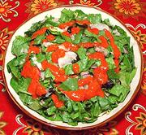

|
Xatonada SaladSpain - Catalunya - Xatonada | ||||
| Serves: Effort: Sched: DoAhead: |
6 salad ** 3 days Part |
An unusual salad with an intensely flavorful dressing (Xató). This salad is traditional in Catalonya, the northeast corner of Spain. | |||
| Recipes vary some, but the green used must be Escarole, regular lettuce doesn't have the bitterness needed. The amount of fish can vary a little but there shouldn't be too much. "You have forced me to like salad" - actual quote from a committed carnivore. | |||||
|
|
4 ------ 1 4 12 1/4 1/8 1/2 1/3 ------ 10 1/2 6 2 5 |
oz --- cl t c c --- oz c oz oz |
Salt Cod (1) -- Dressing Dried Chili (2) Garlic Hazelnuts (3) Salt Pepper Olive Oil ExtV Wine Vinegar (4) -- Salad Escarole Tuna, light (5) Anchovy fillet (6) Olives, black (7) Radishes, red |
Do-Ahead - (2-1/2 days)
|